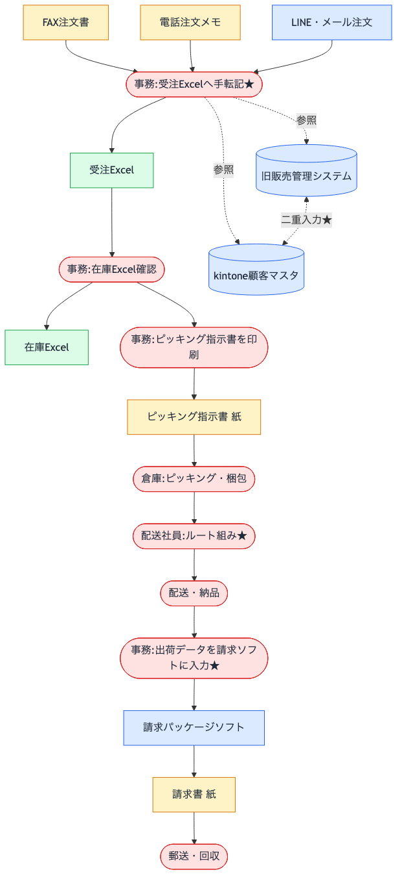

業務整理パック サンプル成果物
このサンプルの目的
業務整理パックを依頼すると、どんな成果物が手元に残るのか — その質感を実例で把握していただくためのページです。 AI を業務に組み込む支援をうたう以上、「言葉で語る」だけでなく AI を使ってどんな成果物が出るのかを 実際のフォーマットでお見せすべきだと考えました。
実案件では、これをクライアント固有の事情に合わせて作成します。 業種・規模・既存システム・経営者個別の論点で内容は変わりますが、 論点整理から着手順までを1本でつなぐ構成は共通です。
1. 想定クライアント
| 企業名（仮） | 株式会社マルキ食品 |
|---|---|
| 業種 | 食品卸（酒類・調味料・乾物） |
| 従業員数 | 28名（事務6・営業10・配送8・倉庫4） |
| 年商 | 約12億円 |
| 取引先 | 飲食店・小売店 約200社 |
経営者の問題意識（ヒアリング想定）
- ベテラン配送が定年を迎えるが、ルート知識を引き継げていない
- FAX転記のミスでクレームが月3〜5件出ている
- kintone を入れたが、旧システムとの二重入力が止まらない
- AIで何かできるはずだが、何から手をつければよいか分からない
- 外注したが要件が固まらず、見積も出てこなかった
2. 業務フロー図（現状）
ヒアリング内容をもとに、主軸業務（受注 → 在庫 → 出荷 → 請求）を1枚に整理しました。手作業・属人化が集中する点を ★ で明示しています。

★ が付いた4点：
- B1：注文の手転記（月3〜5件のクレーム原因）
- E2：配送ルート組み（退職リスクと直結）
- F1：請求への再入力（同じデータを2回触っている）
- G1↔G2：顧客マスタの二重入力
3. 課題整理
| # | 課題 | 主な影響 | 緊急度 |
|---|---|---|---|
| 1 | 受注情報の手転記 | 誤受注クレーム 月3〜5件 | 高 |
| 2 | 配送ルート知識の属人化 | ベテラン引退で配送機能が止まる | 高 |
| 3 | 在庫情報のリアルタイム性欠如 | 受注時に在庫保証ができない | 中 |
| 4 | 顧客マスタの二重管理 | データ不整合・与信判断のブレ | 中 |
| 5 | 受注→請求の再入力 | 同じデータを2回触る工数ロス | 中 |
3つの構造的原因
5つの課題は独立しておらず、以下の構造から派生しています。
- 構造A：媒体・システムが分散していて統合点がない（→ 課題 1, 4, 5）
- 構造B：暗黙知が文書化されていない（→ 課題 2, 3 の一部）
- 構造C：業務動線とシステムがリンクしていない（→ 課題 3, 5）
4. 改善案（AI活用の是非を明示）
3つの構造に対して、改善案を1本ずつ提示。各案で AI が効く・効かないを明確に分けています。
| # | 改善案 | 対応する構造 | AI活用 | 想定期間 |
|---|---|---|---|---|
| 1 | 注文受付の統合 + AI標準化 | A：分散 | 強く効く | 2〜4ヶ月 |
| 2 | 配送ルート知識の AI 抽出と形式知化 | B：属人化 | 部分的 | 1ヶ月 |
| 3 | 受注→出荷→請求のデータ連携 | C：動線分離 | 効かない | 4〜7ヶ月 |
5. 優先順位付き対応案（3フェーズ・約7ヶ月）
第1期で1ヶ月以内に成果を出し、次フェーズへの判断材料にする設計です。AI が実装・テストを加速する前提で工程を組んでいます。
第1期（着手〜1ヶ月）：配送ルート知識のAI抽出
ベテラン2名へのインタビューを録音し、AI で「条件 → 判断」を抽出。実データと突合して教育用ドキュメント化まで4週間で完了。早期に成果が出ることで次フェーズの投資判断がしやすくなります。
第2期（2〜4ヶ月）：受注統合 + AI標準化
FAX チャネル単体での PoC からスタートし、精度検証後に電話・LINE/メールへ拡張。誤受注クレーム月3〜5件 → 月1件以下を目指す。AI が最も決定的に効く領域。
第3期（4〜7ヶ月）：データ連携
仕様調査 → 設計 → 実装 → 並行運用 → 切替。AI が効かない領域だが、ドキュメント生成や設計レビューでは AI 活用で短縮可能。月末残業の解消と在庫リアルタイム化を実現。
各フェーズの終わりに 意思決定ポイント を置き、継続・修正・中断を判断できる構成にしています。
6. 納品物の詳細（ダウンロード）
各ドキュメントの詳細は以下からご覧いただけます。
- 00. クライアント前提 — 想定クライアントの詳細設定
- 01. 業務フロー図 — 現状フローと読み取り
- 02. 課題整理メモ — 5課題の詳細と構造的俯瞰
- 03. 改善案 — 3本の改善案（AI活用の是非を含む）
- 04. 優先順位付き対応案 — フェーズ別計画と意思決定ポイント
- README — このサンプルの読み方
※ Markdown 形式です。GitHub 上 または VSCode の Markdown プレビューで図表含めて表示されます。
このサンプルから読み取っていただきたいこと
- 業務理解を起点にしていること — 技術選定や AI ツール選びから入っていません。業務の構造を整理した上で、必要な箇所に AI を当てています。
- AI の限界を明示していること — 効く領域と効かない領域を分け、過剰な期待を生まない構成です。
- 意思決定ポイントを明示していること — 全期間を通して走り抜けるのではなく、フェーズごとに中断・修正できます。
- 1ヶ月で最初の成果を出す設計 — 早期成果で投資継続の判断材料を作ります。
実際のご相談は お問い合わせ からお願いします。 現状業務の整理から、改善方針・対応順の整理まで、無料相談（30〜60分）で 論点の絞り込みだけでもご対応します。